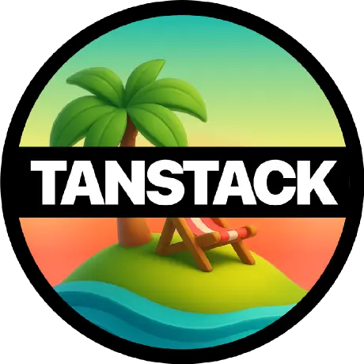

Can I use… silent renew?
Hidden-iframe prompt=none renewal, rotating refresh tokens, and DPoP — browser by browser, stack by stack.
Answer
It depends on one thing, and it isn't the browser. Read the fork below before you read the grid. Cross-site, the iframe is dead. Same-site, it still works in every browser shipping today — but you still shouldn't build on it.
First, answer this. Everything else follows from it.
A "site" is scheme + eTLD+1. Subdomains don't count [5]. Which of these two is your IdP?
The grid everyone quotes is the right-hand card. "Iframe silent renew is dead" is true of Case B and false of Case A, and almost every blog post since 2023 omits the distinction. For itenium-ui: if you control DNS and put Keycloak on auth.itenium.be, you are in Case A. If the IdP ever moves to a managed host, you fall into Case B overnight — which is exactly why you shouldn't build on it.
Browser support — Case B (cross-site IdP)
Cross-site onlyColumn widths and the usage bar are weighted by 2026 global browser share [12]. Chrome is not the web; it is two-thirds of it.
Incognito
<iframe>The one primitive everything else rests onprompt=none silent renewHidden iframe hits /authorize, expects a fresh code backcheckLoginIframePolls the IdP for "are we still logged in?"auth.itenium.be under the app's registrable domain the row nobody puts in the gridprompt=none silent renew, first-party cookieSame scheme + same eTLD+1 ⇒ not a third-party cookie at all [5]Global usage — Case B, cross-site IdP
Global usage — Case A, same-site IdP
- 1. Firefox's Total Cookie Protection (ETP Standard, on by default) doesn't block the cookie so much as partition it — the IdP gets a different cookie jar per top-level site, so it sees no session [3].
- 2. The Storage Access API requires an explicit user gesture before the iframe may read the cookie. The oidc-client-ts proof-of-concept is still an unmerged issue [27]. Silent renew that needs a button click is not silent renew.
- 3. FedCM is the principled replacement, but in Keycloak 26.x it is "emerging and actively tracked, but not a fully supported, production-ready feature" [8] — still an open discussion, not a shipped feature [9] ⭐ 36k. Do not plan around it.
- 4. Managed Chrome/Edge can force-allow the pair via the
CookiesAllowedForUrlsenterprise policy [11] — corp devices only. Any contractor laptop on Safari still fails. Depending on MDM to keep auth working is a smell.
How we got here — and the reversal everyone missed
Get the history rightThe 2023 narrative ("Chrome is killing third-party cookies") is wrong in 2026 — and it never mattered, because the browsers that killed the iframe did it years earlier and unilaterally.
Safari blocks, full stop
Safari 13.1 / iOS 13.4: "Cookies for cross-site resources are now blocked by default across the board." [4] ~18% of the web, gone, six years ago.
The deprecation narrative
Chrome announces a phase-out. Every OIDC blog post declares silent renew dead. Duende replaces session management with back-channel logout in the BFF [10].
Chrome reverses
Google will "maintain our current approach… and not be rolling out a new standalone prompt" [1] [2]. Third-party cookies live on in Chrome.
Nothing was rescued
Chrome sends them. Safari, Firefox and Brave still don't. The reversal changed the headline and not one cell in the grid above.
Known issues
Read before you commitThe vendor deprecated its own headline feature
Keycloak's JS adapter docs: the Session Status iframe is unsupported and auto-disabled when third-party cookies are blocked, and "the affected adapter features might ultimately be deprecated" [7].
Failure mode is silence, not an error
Practitioners report opaque iframe console errors and a hard page reload when renewal fails [28] ⭐ 1.9k. You will not see this in CI; you will see it in a user's Safari.
The Case A trap: it works, so it becomes load-bearing
Same-site silent renew ties your DNS to your auth forever. It dies the day someone fronts the IdP with a SaaS host or moves it off the registrable domain — and by then, ten screens depend on it.
The supported path: rotating refresh tokens
Keycloak vs OpenIddictRFC 9700 (BCP 240, Jan 2025) is permission, not prohibition: "Refresh tokens for public clients MUST be sender-constrained or use refresh token rotation" [13]. Both stacks can rotate. They are not equally good at it.
SetRefreshTokenReuseLeeway() — explicitly "to avoid revoking entire token chains when concurrent requests are received" [19]startupTime, letting every previously rotated refresh token be redeemed again when revokeRefreshToken=true. Fixes targeted at 26.4.13 / 26.6.3 / 26.7.0 [17]dpop_jkt in the authorization request [20] [21]cnf.x5t#S256 is the supported path [23] — and mTLS is not a browser-SPA option.The DPoP asterisk
Not a solutionBefore you treat the green Keycloak column as a win: DPoP does not make a browser refresh token safe from XSS.
A non-extractable key is not an unusable key
A non-extractable WebCrypto key gates exactly two operations. It does not gate the one that matters [24]:
Injected script never needs the key bytes. It calls sign() and mints proofs. RFC 9449 concedes the point: with DPoP "the attacker can only abuse stolen tokens by carrying out an online attack, where the proofs are calculated in the user's browser" [24]. And in Firefox you can't even get that far — it cannot store CryptoKey objects in IndexedDB, forcing extractable keys and defeating non-extractability outright [24].
DPoP downgrades exfiltration + offline replay to online abuse for as long as the tab is open. Real, worth having, not a solution. InfoQ's conclusion (30 Apr 2026): "The BFF pattern is the safest choice today for browser-based applications." [24]
Client libraries
React 19 SPAoidc-client-ts is the de-facto engine. Works against both stacks. DPoP shipped: IndexedDbDPoPStore, bind_authorization_code, UserManager.dpopProof() [25].
react-oidc-context — thin React binding over the above [29]. This is the one that ends up in package.json.
oidc-spa — opinionated: automatic third-party-cookie fallback, dpop: "auto" fetch/XHR interceptors, Keycloak 26.4+ supported [26] [38]. Smallest ecosystem.
keycloak-js is vendor-locked, and its two headline features (checkLoginIframe, silentCheckSsoRedirectUri) are precisely the ones Keycloak's own docs flag as deprecation-bound [7] [37].
@auth0/auth0-react is Auth0-only [39]. Irrelevant unless you switch IdP.

The 401, and the mutex everyone forgets
TanStack Query retries a failed query 3 times with exponential backoff by default [32]. A 401 is not transient. Left alone, one expired token becomes 4 requests × N queries.
⚠ Ten queries mount → ten 401s → ten refresh calls → you are logged out
The #1 reported pitfall. A real codebase fired the refresh "around 6-10 times at once when reopening the site" [35]; the TanStack discussion asking how to wire async-mutex into this is still unanswered [31] ⭐ 50k. And rotation is exactly what turns a race condition into a logout.
new QueryClient({
defaultOptions: {
queries: {
retry: (failureCount, error) =>
error instanceof HttpError && error.status === 401 ? false : failureCount < 3,
},
},
})
let inFlight: Promise<string> | null = null // Everyone awaits the same promise; exactly one /token call leaves the tab. function refreshOnce(): Promise<string> { inFlight ??= doRefresh().finally(() => { inFlight = null }) return inFlight } api.interceptors.response.use(undefined, async (error) => { const req = error.config if (error.response?.status !== 401 || req._retried) throw error req._retried = true // one replay per request, or you loop forever try { const token = await refreshOnce() req.headers.Authorization = `Bearer ${token}` return api(req) } catch { queryClient.clear() redirectToLogin({ returnTo: location.pathname + location.search }) throw error } })
Put it in the HTTP interceptor, not in QueryCache/MutationCache onError. TkDodo's answer is one line: "I would rather use an interceptor on the API layer for that." [30] ⭐ 50k — cache callbacks fire after retries, can't transparently replay the original request, and mix auth into cache concerns [33]. And note: the mutex is per-tab. It does not protect you across tabs — and on Keycloak a BroadcastChannel wouldn't save you either, because two tabs already mean two token families [16].
Where the two architectures diverge
Same 401, different meaning/bff/login?returnUrl=…retry on 401exp from the JWT, refresh at ~80% of lifetime → most 401s never happen.persistQueryClient + MutationCache) or accept the loss.X-CSRF: 1 custom header + SameSite)Proactive renewal is the single biggest UX asymmetry, and it favours the SPA. A bearer client can see exp and refresh before anything 401s, so the failure path is rare. A cookie client is blind and must treat every 401 as a possible session death. That is why BFF apps show "your session expired" modals and SPAs usually don't. The BFF's honest pitch is not "more secure" — it is "less to get right": it deletes the cookie matrix, the mutex, rotation semantics and the DPoP key-storage paradox, and charges you a session store, a sliding-expiry policy, CSRF, and a worse expiry UX [36].
Where this lands for itenium-ui
- Do not build on the iframe. Even if
auth.itenium.bemakes it work today [5] [6], it constrains your DNS forever and dies the day someone moves the IdP or fronts it with a SaaS. - Pure SPA is viable. react-oidc-context + a rotating refresh token in memory/
sessionStorage,retry: falseon 401, one refresh mutex. On Keycloak, add DPoP (26.4+) and you are aligned with BCP 240 [13] [20] — budget for the multi-tab rotation defect [16] and for tracking CVE-2026-9802 [17]. - On OpenIddict, the pure SPA cannot be fully BCP-compliant today. Rotation ✓ (with a 15 s leeway that beats Keycloak's [19]), sender-constraining ✗ — your .NET 10 resource servers can't validate a DPoP-bound token [22].
The rest of the expedition
This grid is one angle of Pure React 19 SPA or a .NET 10 BFF? A decision framework for an internal admin console. The full prose version of this page lives at the default view.
httpOnly cookies do not stop XSS — they convert silent exfiltration into loud, tab-bound session riding.
The BCP names "business applications" in its strongest recommendation, so an internal console is in scope.
Adding a BFF later is a two-way door — the one-way door is the API, not the frontend.
A path-preserving BFF leaves OpenAPI codegen essentially untouched; the cost is the daily dev loop.
YARP + AddOpenIdConnect + Duende.AccessTokenManagement (~250 LOC), or Duende.BFF at $5,750/yr.